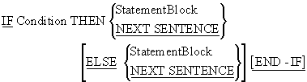
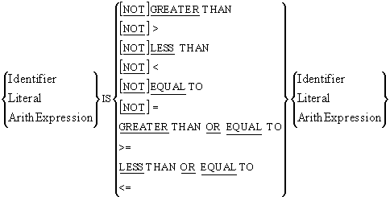
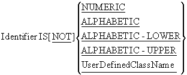
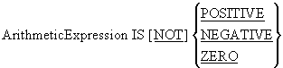
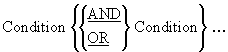
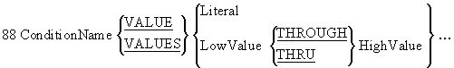
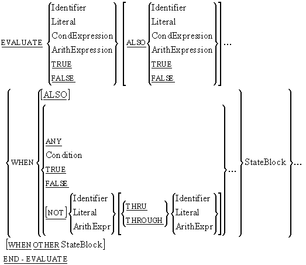
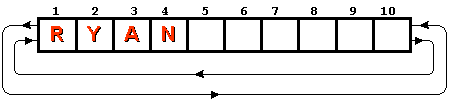

When a program runs the program statements are executed one after another in sequence unless
a statement is encountered that alters the order of execution.
An IF statement is one of the statement types that can alter the order of execution in the
program.
An IF statement allows the programmer to specify that the block of code is to be executed
only if the condition attached to the IF statement is satisfied.

When an IF statement is encountered in a program, the
StatementBlock following the THEN is executed, if the
condition is true, and the StatementBlock following the
ELSE (is used) is executed, if the condition is false.
The StatementBlock(s) can include any valid COBOL statement including further
IF constructs,
PERFORMs, etc.
Although the scope of the IF statement may be delimited
by a full-stop (the old way), or by the END-IF (the new
way), the END-IF delimiter should always be used.
The END-IF makes explicit the scope of the statement.
Using a full stop to delimit the scope of the IF can lead to problems. For instance, the two
IF statements below are supposed to perform the same task. But the scope of the one on the
left is delimited by the END-IF, while that on the right
is delimited by a full stop.
Statement1
Statement2
IF VarA > VarD THEN
Statement3
Statement4
END-IF
Statement5
Statement6.
Statement1
Statement2
IF VarA > VarD THEN
Statement3
Statement4
Statement5
Statement6.
Unfortunately, in the IF on the right, the programmer
has forgotten to follow Statement4 by a delimiting full stop. This means that Statement5 and
6 will be included in the scope of the IF (i.e. will
only be executed if the condition is true) by mistake. If you use full stops to delimit the
scope of an IF statement, this is an easy mistake to
make and, once made, it is difficult to spot. A full stop is small and unobtrusive compared
to an END-IF.
The IF statement is not as simple as the syntax diagram
above seems to suggest. The condition following the IF,
is drawn from one of the condition types shown in the table below.
-
Simple Conditions
- Relation Conditions
- Class Conditions
- Sign Conditions
- Complex Conditions
- Condition Name
Simple and Complex conditions are examined in this section, but Condition Names are so
important that they are covered separately in the next section.

The syntax of a Relation Condition is shown above. As you can see from the diagram a
Relation Condition may be used to test whether a value is less than, equal to, or
greater than, another value.
In the comparison we can use the full words or the symbols shown. Note however, that
there is no symbol for NOT; you must use the
word if you want to express this condition.
When a condition is evaluated, it evaluates to either True or False. It does not
evaluate to 1 or 0.
Note that the values of the compared items must be type compatible. For instance, it
is not valid to have a statement that says
IF "mike" IS EQUAL TO 123 THEN etc

Although COBOL data-items are not "strongly typed", they do fall into some broad categories
or classes, such as numeric or alphanumeric. A Class Condition may be used to determine
whether the value of data-item is a member of one these classes. For instance, a
NUMERIC Class Condition might be used on an alphanumeric
(PIC X) or a numeric (PIC 9) data-item to see if it
contained numeric data.
The UserDefinedClassName is name that a programmer can assign to a set of characters. The
programmer must use the CLASS clause of the
SPECIAL-NAMES paragraph, of the
CONFIGURATION SECTION, in the
ENVIRONMENT DIVISION, to assign a class name to a set of
characters.
Rules
The target of a class test must be a data-item whose usage is explicitly or implicitly,
DISPLAY. In the case of numeric tests, data items with a
usage of PACKED-DECIMAL may also be tested.
The numeric test may not be used with data items described as alphabetic (PIC A) or with
group items when any of the elementary items specifies a sign.
An alphabetic test may not be used with any data items described as numeric (PIC 9).
An data-item conforms to the UserDefinedClassName if its contents consist entirely of the
characters listed in the definition of the UserDefinedClassName.
Example
*> Uses the UPPER Intrinsic Function to convert to uppercase
IF InputChar IS ALPHABETIC-LOWER
MOVE FUNCTION UPPER (InputChar) TO InputChar
END-IF

The Sign Condition determines whether or not the value of an arithmetic expression is less
than, greater than, or equal to zero. Sign Conditions are shorter way of writing certain
Relational Conditions.

Complex Conditions are formed by combining two or more simple conditions using the
conjunction operators OR or
AND.
Like other conditions in COBOL, a complex condition evaluates to either True or False. A
complex condition is an expression and like arithmetic expressions it is evaluated from left
to right unless the order of evaluation is changed by the precedence rules (shown below) or
by bracketing.
|
Precedence
|
Condition Value
|
Arithmetic Equivalent
|
| 1. |
NOT |
** |
| 2. |
AND |
* or / |
| 3. |
OR |
+ or - |
Example
IF Row > 0 AND Row < 26 THEN
DISPLAY "On Screen"
END-IF
IF NOT Amnt1 < 10 OR Amnt2 = 50 AND Amnt3 > 150 THEN
DISPLAY "Done"
END-IF
The effect of bracketing
Let's examine the last example above to see what difference bracketing makes to the order of
evaluation.
First consider how the statement would be bracketed to make explicit what is actually
happening.
The NOT takes precedence so we must write -
NOT (Amnt1 <10).
The AND is next in precedence so we must bracket
-
((Amnt2=50) AND (Amnt3 > 150)).
Finally the OR is evaluated to give the full
condition as -
(NOT (Amnt1 < 10))
OR ((Amnt2 = 50)
AND
(Amnt3 > 150))
If all the simple conditions are true; will the Complex Condition be true? Let's check.
| Condition |
(NOT (Amnt1 < 10))
OR ((Amnt2 = 50)
AND (Amnt3 > 150))
|
|
Expressed as
|
(NOT (T))
OR
((T) AND (T))
|
|
Evaluates to
|
(F)
OR
(T)
|
|
Evaluates to
|
True
|
Consider the condition in the table below and ask the same question. Is the Complex
Condition true if all the Simple Conditions are true?
| Condition |
NOT ((Amnt1 < 10)
OR (Amnt2 = 50))
AND (Amnt3 > 150)
|
|
Expressed as
|
NOT
((T) OR (T))
AND
(T)
|
|
Evaluates to
|
NOT
(T)
AND
(T)
|
|
Evaluates to
|
(F)
AND
(T)
|
|
Evaluates to
|
False
|
Now, consider the condition below and create a table similar to the ones above. Is this
Complex Condition true if all the Simple Conditions are true?
IF NOT (((Amnt1 < 10)
OR
(Amnt2 = 50))
AND (Amnt3 > 150))
THEN
Although COBOL is often verbose, it does occasionally provide constructs that enable quite
succinct statements to be written. Implied Subjects is one of these constructs.
You can use Implied Subjects when you are making a number of comparisons against a single
data-item.
For instance, in the first example in Complex Conditions above, we check to see if Row is
greater than 0 and Row is less than 26. We could rewrite this statement using Implied
Subjects as-
IF Row > 0 AND < 26 THEN etc
the Implied Subject here is Row.
Examples
In these examples the full condition is shown first and is followed by the condition using
Implied Subjects
IF TotalAmt > 10000 AND TotalAmt < 50000 THEN etc.
IF TotalAmt > 10000 AND < 50000 THEN etc
*> The Implied Subject is - TotalAmt
IF Grade = "A" OR Grade = "B1" OR GRADE = "B2" OR GRADE = "B3"
IF Grade = "A" OR "B1" OR "B2" OR "B3"
*>The Implied Subject is - Grade = "A"
IF VarA > VarB AND VarA > VarC AND VarA > VarD
DISPLAY "VarA is the Greatest" <
END-IF
IF VarA > VarB AND VarC AND VarD
DISPLAY "VarA is the Greatest" <
END-IF
*> The Implied Subject is - VarA >
COBOL allows nested IF statements.
For example:
IF ( VarA < 10 ) AND ( VarB NOT > VarC ) THEN
IF VarG = 14 THEN
DISPLAY "First"
ELSE
DISPLAY "Second"
END-IF
ELSE DISPLAY "Third"
END-IF
The table below contains representations of the variables used in the nested Ifs above. In
each instance, see if you can figure out which of the messages will be displayed. To see the
answer, move your cursor over the text "Answer" and the correct answer should be shown.
|
VarA
|
VarB
|
VarC
|
VarG
|
DISPLAY
|
| 3 |
4 |
15 |
14 |
Click arrow for answer
First is displayed
|
| 3 |
4 |
15 |
15 |
Click arrow for answer
Second is displayed
|
| 3 |
4 |
3 |
14 |
Click arrow for answer
Third is displayed
|
| 13 |
4 |
15 |
14 |
Click arrow for answer
Third is displayed
|
Wherever a condition can occur, such as in an
IF statement or an
EVALUATE or a
PERFORM..UNTIL , a Condition Name (Level 88) may be
used.
Condition Names are defined in the DATA DIVISION using
the special level number 88. They are always associated with a data-item and are defined
immediately after the definition of the data-item.
A Condition Name is a name given to a specified subset of the values which its associated
data-item can hold.
Like a condition, a Condition Name evaluates to True or False.

When used with Condition Names, the VALUE clause does
not assign a value. It merely identifies the value(s) in the data-item which make the
Condition Name True.
When identifying the condition values, you can specify a single value, a list of values, a
range of values, or any combination of these.
To specify a list of values, simply list the values after the keyword
VALUE. The list entries may be separated by commas or
spaces but must terminate with a full-stop.
e.g. 02 DeptCode PIC X.
88 ProductionDept VALUE "I","L","T".
To specify a range, use the keyword THRU, or
THROUGH, to separate the low and high values.
E.g. 02 AgeInYears PIC 9(3).
88 Teenager VALUE 13 THRU 19.
Several Condition Names may be associated with a single data item,
e.g. 02 AgeInYears PIC 9(3).
88 Child VALUE 0 THRU 12.
88 Teenager VALUE 13 THRU 19.
88 Adult VALUE 21 THRU 999.
More than one Condition Names may be true at the same time. For instance, if AgeInYears
contains the value 20 both Teenager and Voter will be true.
E.g. 02 AgeInYears PIC 9(3).
88 Child VALUE 0 THRU 12.
88 Teenager VALUE 13 THRU 19.
88 Adult VALUE 21 THRU 999.
88 Voter VALUE 18 THRU 999.
Condition Name notes
-
A Condition Name evaluates to True or False depending on the value of its associated
data-item.
-
A Condition Name may be associated with any data-item, whether it is a table element, or
a group item, or an elementary item.
-
The data values specified for a Condition Name must be consistent with the data type of
the associated data-item.
Examine the examples in the animation below. Make sure you understand how Condition Names
are created, how they work and how they are used.

Condition Names should express the true condition being tested. For instance, consider the
condition names below. In this example, the programmer has replaced the conditions that
tested EUCountryCode, with Condition Names that do the same thing. Then he replaced the
statement -
IF EUCountryCode = 2 by IF CodeIs2.
01 EUCountryCode PIC 99.
88 CodeIs1 VALUE 1.
88 CodeIs2 VALUE 2.
88 CodeIs3 VALUE 3.
etc.
IF CodeIs2 THEN
ADD Bonus to StructuralFunds(EUCountry)
END-IF
IF CodeIs1 THEN
SUBTRACT Bonus FROM StructuralFunds(EUCountry)
END-IF
The problem with these Condition Names is that the true condition being tested is not
whether the code is 1 or 2, but what country a code of 1 or 2 represents. Choosing condition
names like the ones above causes readability difficulties. For instance, can you tell which
country is gaining and which is losing in the example above? No! You have to look at the
rest of the program to find out what code is assigned to what country.
Now consider the Condition Names below. Can you see which country is losing and which is
gaining now?
01 EUCountryCode PIC 99.
88 France VALUE 1.
88 Ireland VALUE 2.
88 Denmark VALUE 3.
etc.
IF Ireland THEN
ADD Bonus to StructuralFunds(EUCountry)
END-IF
IF France THEN
SUBTRACT Bonus FROM StructuralFunds(EUCountry)
END-IF
The SET verb is used for a number of unrelated functions in COBOL, so instead of dealing
with it as a single topic, we will deal each format as we examine the construct to which it
is most closely related.
In this section, we show how the SET verb may be used to
set a Condition Name to True.
SET {ConditionName} ... TO TRUE
A Condition Name set to true when one of the condition values mentioned in its
VALUE clause is moved into its associated data-item. But
you can also set a Condition Name to true using the
SET verb.
When the SET verb is used to set a Condition Name, the
first condition value specified after the VALUE clause
in the definition is moved to the associated data-item. Thus, the value of the associated
data-item is changed.
So, any operation which changes the value of the data-item may change the status of the
associated Condition Names, and any operation which changes the status of a Condition Name
may change the value of its associated data-item.
It is not (at present) possible to set a condition name to False.
The SET verb is most often used to set an end of file
Condition Name when reading Sequential Files. The animation below demonstrates how to set up
and use an end of file Condition Name.
The animation above demonstrated a simplified version of how the
SET verb may be used with Sequential Files. One problem
with the approach shown, is that the Condition Name has to be declared in the
WORKING-STORAGE SECTION and there may be hundreds of
lines of code separating it from the file whose end it is signalling.
In the program fragment below, a somewhat different approach to setting an end of file
Condition Name is demonstrated. This is the method you should use in your programs.
In this example, the EndOfStudentFile Condition Name is attached to the StudentDetails
record. When EndOfStudentFile is set to true, every character of the record is filled with
HIGH-VALUES (the highest
ASCII value the character can hold).
Filling the record with HIGH-VALUES produces a useful
side-effect which we will examine when we discuss updating Sequential Files.
DATA DIVISION.
FILE SECTION.
FD StudentFile.
01 StudentDetails.
88 EndOfStudentFile VALUE HIGH-VALUES.
02 StudentId PIC 9(7).
02 StudentName.
03 Surname PIC X(8).
03 Initials PIC XX.
02 DateOfBirth.
03 YOBirth PIC 9(4).
03 MOBirth PIC 9(2).
03 DOBirth PIC 9(2).
02 CourseCode PIC X(4).
02 Gender PIC X.
etc.
PROCEDURE DIVISION.
Begin.
OPEN INPUT StudentFile
READ StudentFile
AT END SET EndOfStudentFile TO TRUE
END-READ
PERFORM UNTIL EndOfStudentFile
DISPLAY StudentId SPACE StudentName SPACE CourseCode
READ StudentFile
AT END SET EndOfStudentFile TO TRUE
END-READ
END-PERFORM
CLOSE StudentFile
STOP RUN.
The EVALUATE verb is COBOL's version of the Case or
Switch construct but the EVALUATE is far more powerful
and easier to use than either of these constructs.
The notes below briefly describe how the EVALUATE verb
works, but you'll want to examine the syntax diagram in combination with the examples to
gain a fuller understanding.

EVALUATE notes
The items immediately after the word EVALUATE and before
the first WHEN are called subjects.
The items between the WHEN and its imperative statements
are called objects.
The number of subject be equal to the number of objects and the type of each
subject must be compatible with the type of its corresponding object.
The keyword ALSO must be used to separate each object
from its succeeding object and each subject from its succeeding subject.
Only one WHEN branch is chosen per execution of the
EVALUATE, and the checking of the
WHEN branches is done from top to bottom.
If none of the WHEN branches can be chosen, and a
WHEN OTHER phrase exists, the
WHEN OTHER branch is executed.
If none of the WHEN branches can be chosen, and there is
no WHEN OTHER phrase, the
EVALUATE simply terminates.
We want to create a ten character edit field to accept characters from the keyboard and
allow them to be edited. The edit field will be implemented as a ten character array as
shown below.

What sort of functionality do we want to implement?
-
We want to insert characters typed at the keyboard into the array at the current cursor
position and we want to move the cursor one character to the right unless it is already
in position 10.
-
If a left arrow key is pressed we want to move the current cursor position one character
to the left.
- If a right arrow key is pressed we want to move the cursor position to the right.
-
If the delete key is pressed we want to delete the character at the current cursor
position and shunt the remaining characters to the left.
-
We also want to implement wraparound so that if the cursor is at the first character
position and we press the left arrow the cursor position is set to 10 and if the cursor
is in position 10 and the right arrow is pressed the cursor position is set to 1.
Let's assume we can get a character from the keyboard and that we have used Condition Names
to detect the left-arrow, right-arrow and delete characters. What kind of an
EVALUATE statement would we need to implement the rest
of the functionality.
EVALUATE TRUE ALSO Position
WHEN L-Arrow ALSO 2 THRU 10 SUBTRACT 1 FROM Position
WHEN R-Arrow ALSO 1 THRU 9 ADD 1 TO Position
WHEN L-Arrow ALSO 1 MOVE 10 TO Position
WHEN R-Arrow ALSO 10 MOVE 1 TO Position
WHEN DelKey ALSO ANY PERFORM DeleteChar
WHEN Char ALSO 1 THRU 9 PERFORM InsertChar
ADD 1 TO Position
WHEN Char ALSO 10 PERFORM InsertChar
WHEN OTHER PERFORM DisplayErrorMessage
END-EVALUATE
How does this EVALUATE work?
The subjects are TRUE and Position. So
the first object after the WHEN clause
must specify a condition to be compatible. with its subject, and the second
must specify a value or range of values. So the first
WHEN clause reads as -
When the L-Arrow Condition Name is true and the data-item Position has a value in the
range 2-10 then we add 1 to the Position.
Finally, in a language you are already familiar with, write a Switch/Case statement to do
the same thing as the EVALUATE above does.
As you have already seen in the example above, the
EVALUATE is very powerful construct; but where it really
shines is implementing decision table logic. Consider the example below.
Jupiter Books - the largest on-line bookstore in the galaxy - sells books, through the
Internet, to customers all over the world. For each order, Jupiter applies a percentage
discount based on - the quantity of books in the current order, the value of books purchased
in the last three months, and whether the customer is a member of the Jupiter Book Club.
Jupiter Books uses a decision table to decide what discount to apply. The decision table and
the
EVALUATE which implements it are shown below.
| QtyOfBooks |
ValueOfPurchases (VOP)
|
ClubMember |
% Discount |
| 1-5 |
$0-500 |
Y |
2% |
| 6-16 |
$0-500 |
Y |
3% |
| >16 |
$0-500 |
Y |
5% |
| 1-5 |
$501-2000 |
Y |
7% |
| 6-16 |
$501-2000 |
Y |
12% |
| >16 |
$501-2000 |
Y |
18% |
| 1-5 |
> $2000 |
Y |
10% |
| 6-16 |
> $2000 |
Y |
23% |
| >16 |
> $2000 |
Y |
35% |
| 1-5 |
$0-500 |
N |
1% |
| 6-16 |
$0-500 |
N |
2% |
| >16 |
$0-500 |
N |
3% |
| 1-5 |
$501-2000 |
N |
5% |
| 6-16 |
$501-2000 |
N |
10% |
| >16 |
$501-2000 |
N |
15% |
| 1-5 |
> $2000 |
N |
8% |
| 6-16 |
> $2000 |
N |
23% |
| >16 |
> $2000 |
N |
28% |
EVALUATE Qty ALSO TRUE ALSO Member
WHEN 1 THRU 5 ALSO VOP < 501 ALSO "Y" MOVE 2 TO Discount
WHEN 6 THRU 16 ALSO VOP < 501 ALSO "Y" MOVE 3 TO Discount
WHEN 17 THRU 99 ALSO VOP < 501 ALSO "Y" MOVE 5 TO Discount
WHEN 1 THRU 5 ALSO VOP < 2001 ALSO "Y" MOVE 7 TO Discount
WHEN 6 THRU 16 ALSO VOP < 2001 ALSO "Y" MOVE 12 TO Discount
WHEN 17 THRU 99 ALSO VOP < 2001 ALSO "Y" MOVE 18 TO Discount
WHEN 1 THRU 5 ALSO VOP > 2000 ALSO "Y" MOVE 10 TO Discount
WHEN 6 THRU 16 ALSO VOP > 2000 ALSO "Y" MOVE 23 TO Discount
WHEN 17 THRU 99 ALSO VOP > 2000 ALSO "Y" MOVE 35 TO Discount
WHEN 1 THRU 5 ALSO VOP < 501 ALSO "N" MOVE 1 TO Discount
WHEN 6 THRU 16 ALSO VOP < 501 ALSO "N" MOVE 2 TO Discount
WHEN 17 THRU 99 ALSO VOP < 501 ALSO "N" MOVE 3 TO Discount
WHEN 1 THRU 5 ALSO VOP < 2001 ALSO "N" MOVE 5 TO Discount
WHEN 6 THRU 16 ALSO VOP < 2001 ALSO "N" MOVE 10 TO Discount
WHEN 17 THRU 99 ALSO VOP < 2001 ALSO "N" MOVE 15 TO Discount
WHEN 1 THRU 5 ALSO VOP > 2000 ALSO "N" MOVE 8 TO Discount
WHEN 6 THRU 16 ALSO VOP > 2000 ALSO "N" MOVE 23 TO Discount
WHEN 17 THRU 99 ALSO VOP > 2000 ALSO "N" MOVE 28 TO Discount
END-EVALUATE
Comments
Notice how easily and clearly the decision table is implemented using an
EVALUATE. Not only is the
EVALUATE clear but there is no temptation to take
shortcuts which may cause problems later. For instance, at the moment, a discount of 23% is
offered in two places in the table. A programmer writing in C might be tempted to take
advantage of this by coding;
if((Qty > 5) && (Qty < 17)) && (VOP > 2000)
{ Discount = 23;
}//end-if
This immediately causes problems of readability. You have to ask yourself; is this an
accurate reflection of the decision table or has the programmer introduced an error?
This code will also cause maintenance problems. What's going to happen if Jupiter decide
change the second 23% discount to 20%. Big rewrite of the C code. One change to the COBOL
code.